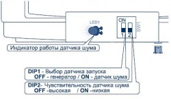

Список вопросов
Сигнализация не срабатывает при ударе по кузову автомобиля
Датчик удара отключен.
На это будет указывать символ перечеркнутого молоточка на брелоке с ЖК дисплеем.
Слишком «грубая» настройка датчика удара.
Неправильно установлен датчик удара.
В качестве сенсорного элемента в датчике удара применен электретный микрофон, регистрирующий вибрации, передающиеся по металлическим деталям кузова автомобиля. Именно вибрации, а не как некоторые полагают, шум в салоне. Наилучший способ крепления датчика удара, саморезами к металлу кузова или силовых элементов жесткости под торпедо автомобиля. Допустимо крепить датчик на металлические детали с помощью пластиковых стяжек.
(!) Неправильно устанавливать датчик удара на двусторонний липкий скотч, крепить датчик к пластиковым панелям или к жгутам проводки автомобиля. Также "неудачное" крепление датчика может сказываться на его "плохой" чувствительности, и как следствие, при установке датчика удара чувствительность приходится выставлять на максимум.
(!) Если датчик закреплен на пластиковой панели, это может приводить еще и к ложным срабатываниям сигнализации, т.к. изменение температуры в салоне автомобиля сопровождается деформацией пластиковых элементов, способных вызвать срабатывание сигнализации (слышали, наверное, щелчки панелей при прогреве или остывании салона).
Иногда белок выдает короткое тревожное сообщение (не успеваю увидеть причину тревоги)
Срабатывает предупредительная зона датчика удара.
Отрегулировать чувствительность датчика удара.
Сигнализация не реагирует на нажатие кнопок брелока.
Разрядился элемент питания брелока.
Степень остаточного заряда батареи брелока можно определить по количеству темных сегментов на фоне красного прямоугольника в углу экрана брелока. Четыре темных сегмента означают максимальный заряд батареи. Чем меньше сегментов, тем хуже батарея.
Высокий уровень помех в радиоэфире.
Как правило, может наблюдаться на крупных автостоянках, в районе мощных радиопередающих станций и ретрансляторов, возле офисов силовых ведомств и пр. Эту причину легко определить по поведению сигнализаций в рядом припаркованных автомобилях. Если их владельцы тоже испытывают трудности в управлении своими сигнализациями, то в этом и кроется причина отказа.
Сигнализация Scher-khan Magicar 7/8/9/10 может не реагировать на нажатие кнопок брелока если включены (случайно) режим управления вторым автомобилем (на индикаторе отображается силуэт автомобиля с надписью на нем, 2nd) или режим блокировки кнопок брелока (при нажатии кнопки брелок трижды пикает и вместо времени, появляется надпись HOLD).
Произошла рассинхронизация передаваемого в эфир кода брелка и кода «ожидаемого сигнализацией».
(!) Для устранения такого сбоя необходимо заново запрограммировать брелоки в память системы, руководствуясь описанием, приведенным в инструкции по эксплуатации.
Сигнализация Scher-Khan Magicar 6/B не реагирует на короткие нажатия кнопок, при удержании кнопки брелока сигнализация реагирует на команды.
Произошла рассинхронизация передаваемого в эфир кода брелка и кода «ожидаемого сигнализацией».
Для устранения такого сбоя необходимо заново запрограммировать брелоки в память системы, руководствуясь описанием, приведенным и инструкции по эксплуатации.
(!) Необходимо помнить, что в системе Scher-Khan Magicar 6/B для программирования брелоков всегда необходимо вводить первые две цифры PIN-кода.
На индикаторе брелока не отображается символ антенны или символ качества связи.
В сигнализациях Scher-Khan Magicar 5/6/А/В/С/D при передаче команды брелоком, мигает символ антенны и, если автомобиль принял команду с брелока, отобразится символ обратной связи в виде четырех вертикальных полос возрастающей длины. Через несколько секунд оба индикатора погаснут. Если сигнал брелока автомобилем не был принят, то на дисплее не будут отображаться индикаторы антенны и обратной связи.
В сигнализациях Scher-Khan Magicar 7/8/9/10 при передаче команды брелоком, мигает символ антенны и, если автомобиль принял команду с брелока, отображается индикатор качества связи, количество сегментов в котором пропорционально качеству связи. Если сигнал брелока автомобилем не был принят, то на дисплее не будут отображаться индикаторы антенны и качества связи.
(!) Также не будут отображаться индикаторы если включить подсветку дисплея кнопкой III. Это обусловлено тем, что при включении подсветки дисплея брелока не происходит радиообмен между брелоком и центральным блоком сигнализации.
(!) В сигнализациях Scher-Khan Magicar 7/8/9/10 нет функции автоматичкского контроля качества связи. Обновление символа качества связи происходит только при передаче команды.
Сигнализация самопроизвольно включает и выключает режим охраны, когда я нахожусь рядом с автомобилем.
Я ставлю сигнализацию на охрану, а сигнализация сразу снимается с охраны.
Включен режим «свободные руки».
(!) Отключить режим «свободные руки» руководствуясь описанием, приведенным и инструкции по эксплуатации.
Светодиод на датчике вызова водителя постоянно светится красным цветом.
Неисправен датчик вызова водителя.
С таким дефектом необходимо обратиться в ремонт.
(!) Также светодиод может светится красным светом если аккумулятор автомобиля сильно разряжен. Как правило при такой просадке аккумулятора, двигатель автомобиля завести уже не удастся.
Светодиод на датчике вызова водителя постоянно светится синим цветом, при этом сигнализация не подает сигналов, а только закрывает и открывает ЦЗ автомобиля.
Включен режим VALET.
Режим валет предназначен для отключения охранных функций системы при передаче машины на сервисную станцию, мойку и пр. Режим VALET отображается на дисплее символом ZZzz. Отключить режим VALET руководствуясь описанием, приведенным и инструкции по эксплуатации.
Я запрограммировал запуск двигателя при температуре -15 С, было холоднее, а двигатель так и не завелся.
В сигнализациях Scher-Khan оснащенных функцией автозапуска двигателя, нет настроек на запуск двигателя ТОЛЬКО по параметру температуры.
Для настройки автозапуска двигателя с учетом температуры необходимо запрограммировать запуск по таймеру с интервалом 2;4 или 8 часов. Затем запрограммировать порог температуры запуска двигателя -15С; -25С или +60С. После этого включить (запустить) таймер с брелока. Если он был включен, то его надо выключить, затем снова включить, для синхронизации нового времени запуска.
Пример: программируем таймер на запуск каждые 2 часа, температуру на -15С. При таких настройках, после активации таймера, система будет "ждать" истечения 2-х часов, затем начнет проверять достигла температура -15С или нет. Если температура снизилась до -15С и ниже, то произойдет автозапуск, если нет, будет ждать снижения до -15С и только потом заведет двигатель. По окончании времени автозапуска, снова начнется 2-х часовой цикл таймера, и все повторится.
Для чего применяется PIN1?
Во всех сигнализациях Scher-Khan Magicar (за исключением Scher-Khan Magicar 6) PIN1 код в заводских настройках сигнализации, не активирован. Для того чтобы начать использовать PIN1 код, необходимо его запрограммировать, руководствуясь описанием, приведенным и инструкции по эксплуатации.
PIN1 код:
• Защищает при попытке несанкционированного аварийного отключения режима охраны сигнализации.
• Защищает от несанкционированной записи дополнительного брелока в память системы.
• "Вводится с брелока" при двушаговом отключении режима охраны (за исключением Scher-Khan Magicar 6).
http://www.mega-f.ru/board/viewtopic.php?p=11762#p11762
Для чего применяется PIN2?
PIN2 код используется для включения и выключения режима охраны без использования брелока сигнализации. PIN2 код вводится постукиванием (снаружи автомобиля, по лобовому стеклу) в районе приклеенного изнутри датчика вызова водителя.
Во всех сигнализациях модельного ряда Scher-Khan Magicar, PIN2-код не активирован. Для того чтобы начать использовать PIN2-код, необходимо его запрограммировать, руководствуясь описанием, приведенным и инструкции по эксплуатации.
Функция может "выручить" в случае когда нет возможности воспользоваться брелоком, например села батарея брелока. Особенно полезной эта функция будет для тех у кого конструкция автомобиля позволяет закрыть ключи в автомобиле.
http://www.mega-f.ru/board/viewtopic.php?p=12303#p12303
Где купить сигнализацию Scher-Khan Magicar 9 или 10?
Системы Scher-Khan Magicar 9 и 10 поставляются в салоны официальных дилеров автомобильных марок, и не продаются в свободной рознице
Что будет, если я сброшу программируемые функции на заводские настройки, как это описано в инструкции?
Несмотря на доступность этой процедуры, категорически не рекомендуется самостоятельно изменять настройки программируемых функций через сброс. Это чревато выходом из строя механизмов автомобиля и даже невозможностью запуска двигателя автомобиля.
Эта процедура рассчитана на установщиков противоугонных систем, понимающих последствия выполнения сброса функций.
Пример "неудачного" сброса: http://www.mega-f.ru/board/viewtopic.php?p=13060#p13060
При снятии с охраны, несколько раз мигают огни аварийной сигнализации, сирена несколько раз пикает.
Если с момента включения охраны происходила тревога, то сигнализация оповестит об этом световыми и звуковыми сигналами, в момент отключения режима охраны.
Сигнализация в режиме охраны, брелок не работает. Как отключить режим охраны?
Попробовать отключить режим охраны вторым брелоком.
Если заранее был запрограммирован PIN2–код, то выполнить следующие действия:
1) Стукните 10 раз по стеклу автомобиля в месте где приклеен датчик вызова водителя. Каждый раз светодиод в датчике будет вспыхивать красным цветом. Время между ударами должно быть меньше 1,5 сек.
2) Светодиод быстро замигает, синим цветом, подтверждая тем самым выполнение предыдущего шага. Если светодиод не замигал синим, то начните с пункта 1.
3) Пока светодиод часто мигает, стукните по датчику вызова количество раз, соответствующее первой цифре кода. Через 1,5 сек. светодиод подтвердит выбранную цифру синими вспышками и снова начнет быстро мигать
4) Пока светодиод мигает, стукните по датчику вызова количество раз, соответствующее второй цифре кода. Через 1,5 сек. светодиод подтвердит выбранную цифру синими вспышками и снова начнет быстро мигать
5) Пока светодиод мигает, стукните по датчику вызова количество раз, соответствующее третьей цифре кода. Через 1,5 сек. светодиод подтвердит выбранную цифру синими вспышками и снова начнет быстро мигать
6) Пока светодиод мигает, стукните по датчику вызова количество раз, соответствующее четвертой цифре кода. Через 1,5 сек. светодиод подтвердит выбранную цифру синими вспышками.
7) Если код введен корректно, то система снимется с режима охраны, замки дверей откроются, на брелок-коммуникатор придет сигнал о снятии системы с охраны. Если ввод кода произведен неверно, то на брелок придет сигнал вызова владельца, и необходимо будет повторить все действия, начиная с пункта 1.
Провести процедуру «аварийного» отключения режима охраны. В инструкции по эксплуатации она называется «снятие системы с охраны без брелока».
(!) В разных моделях сигнализаций она выполняется по-разному.
Для Scher-Khan Magicar 3/4/5 (при условии, что PIN1-код не активирован)
1) Откройте дверь автомобиля ключом, система перейдет в режим тревоги.
2) До истечения четырех секунд три раза переведите ключ в замке зажигания из положения OFF (ВЫКЛ.) в положение ON (ВКЛ.), после чего выключите зажигание. Режим тревоги прекратится.
3) По истечении 4 сек. блокировка стартера (зажигания) выключится. Система перейдет в режим VALET.
Для Scher-Khan Magicar 6 (Описан ввод заводского PIN1-кода 1111)
1) Откройте дверь автомобиля ключом, система перейдет в
режим тревоги.
2) До истечения 4-х секунд три раза переведите ключ в замке зажигания из положения OFF (Выкл.) в положение зажигания ON (Вкл.). Выключите зажигание. Режим тревоги прекратится.
3) До истечения 4-х секунд переведите ключ в замке зажигания из положения OFF (Выкл.) в положение зажигания ON (Вкл.) количество раз, соответствующее первой цифре персонального кода. Выключите зажигание. По истечении 4-х сек. аварийная сигнализация вспыхнет один раз, подтверждая тем самым готовность системы к вводу второй цифры персонального кода.
4) До истечения 4-х секунд переведите ключ в замке зажигания из положения OFF (Выкл.) в положение зажигания ON (Вкл.) количество раз, соответствующее второй цифре персонального кода. Выключите зажигание. По истечении 4-х сек. аварийная сигнализация вспыхнет один раз, подтверждая тем самым готовность системы к вводу третьей цифры персонального кода.
5) До истечения 4-х секунд переведите ключ в замке зажигания из положения OFF (Выкл.) в положение зажигания ON (Вкл.) количество раз, соответствующее третьей цифре персонального кода. Выключите зажигание. По истечении 4-х сек. аварийная сигнализация вспыхнет один раз, подтверждая тем самым готовность системы к вводу четвёртой цифры персонального кода.
6) До истечения 4-х секунд переведите ключ в замке зажигания из положения OFF (Выкл.) в положение зажигания ON (Вкл.) количество раз, соответствующее четвёртой цифре персонального кода. По истечении 4-х сек. аварийная сигнализация вспыхнет два раза, подтверждая тем самым ввод четвёртой цифры кода.
7) Если код был введен корректно, то блокировка стартера (зажигания) выключится. Система перейдет в режим VALET. Если код был введен не корректно, то система вернется в режим тревоги.
Для Scher-Khan Magicar 7/8/9/10 (при условии, что PIN1-код не активирован)
1) Откройте дверь автомобиля ключом. Система перейдет в режим тревоги.
2) Включите зажигание (двигатель при этом запускать не нужно).
3) Нажмите и удерживайте кнопку на корпусе датчика вызова водителя 2 сек. Аварийная сигнализация вспыхнет один раз. Режим тревоги прекратится.
4) До истечения 5 сек. кратковременно нажмите кнопку датчика вызова водителя.
Прозвучит два коротких сигнала сирены. Аварийная сигнализация автомобиля
вспыхнет два раза. Система выйдет из режима охраны, на брелок-коммуникатор будет передан сигнал о снятии системы с охраны
Не могу запрограммировать новый брелок к сигнализации Scher-Khan Magicar 7/8
В 2008 году в сигнализациях Scher-Khan Magicar 7 и 8 изменился алгоритм кодирования информации передаваемой брелоком в эфир. В результате этого брелоки в старой и в новой моделях стали несовместимы и не взаимозаменяемы. Для идентификации обновленных моделей сигнализации Scher-Khan Magicar 7 и 8, к серийному номеру брелока была добавлена литера « h ».
Поэтому, прежде чем программировать (заказывать, покупать) новый брелок для сигнализации Scher-Khan Magicar 7 или 8, определите (по серийному номеру брелока) какого поколения брелок подходит к Вашей сигнализации.
Как запрограммировать брелок в сигнализацию Scher-Khan Magicar 6/B?
Система Scher-Khan Magicar 6/B может запомнить коды трех брелоков.
В Системе Scher-Khan Magicar 6/B не отключаемый PIN1-код который защищает сигнализацию от несанкционированной записи новых брелоков в память системы.
Перед началом программирования убедитесь, что режим охраны выключен и отключена функция «Свободные руки».
Ниже описана прцедура программирования брелоков с применением заводского PIN-кода (равного 1111) для программирования брелоков.
Для программирования брелока необходимо ввести только первые две цифры PIN1-кода.
Для программирования брелоков выполните все четыре шага:
1) В течение 2-х сек. три раза поверните ключ в замке зажигания из положения OFF (Выкл.) в положение ON (Вкл.) и обратно. т.е.
Включить / выключить
Включить / выключить
Включить / выключить
Аварийная сигнализация автомобиля вспыхнет один раз, подтверждая выполнение первого шага.
2) До истечения 4-х сек. после вспышки аварийной сигнализации включите зажигание количество раз, соответствующее первой цифре персонального кода (заводское значение «1» т.е 1 раз вкл/выкл.).
Включить / выключить
Аварийная сигнализация автомобиля вспыхнет один раз, подтверждая готовность ввода второй цифры.
3) До истечения 4-х сек. после вспышки аварийной сигнализации включите зажигание количество раз, соответствующее второй цифре персонального кода (заводское значение «1» т.е 1 раз вкл/выкл.).
Включить / выключить
Аварийная сигнализация автомобиля вспыхнет один раз, подтверждая готовность ввода кодов брелоков.
4) До истечения 4-х сек. после вспышки аварийной сигнализации нажмите кнопку ( I ) брелока, код которого необходимо ввести в память процессорного блока.
Нажать, коротковременно, кнопку ( 1 ) брелока.
Аварийная сигнализация автомобиля вспыхнет один раз, подтверждая запись брелока в память системы.
Повторите действия, описанные в п. 4 для всех остальных брелоков, которые необходимо записать в память системы.
Если необходимо стереть информацию об утерянном или украденном брелоке из памяти системы, то для этого необходимо запрограммировать брелок несколько раз, то есть выполнить 4-й пункт три раза.
Выйти из режима программирования можно на любом этапе, для этого сделайте паузу и не предпринимайте никаких действий. Через 4-е секунды последуют две вспышки аварийной сигнализации, подтверждая выход из режима программирования брелоков.
Если войти в режим программирования, но не записывать в память, ни одного брелока, то при выходе из режима программирования сигнализация Scher-Khan Magicar 6 перейдет в режим VALET.
Не включается режим "свободные руки" в Scher-Khan Magicar 5/6
Если при удержании кнопки (I) брелока появляется надпись AUTO и не включается режим "свободные руки", то у Вас брелок с обновленным алгоритмом включения этого режима.
Для включения режима "свободные руки" необходимо, удерживать кнопку (I) брелока с ЖК дисплеем до звукового сигнала и появления надписи AUTO, затем, кратковременно нажать кнопку IV брелока.
Описанный выше алгоритм включения/выключения функции "свободные руки" предназначен для защиты от случайного включения этой функции.
Не выполняется резервирование (не работает запуск) в Scher-Khan Magicar 5 и Scher-Khan Magicar А
Далее описаны причины различных отказов в работе функции автозапуска системы Scher-Khan Magicar-5 и Scher-Khan Magicar-А
Наиболее часто встречающаяся причина такого явления это отсутствие у сигнализации информации о том, работает двигатель автомобиля в данный момент времени, или нет. Проверить это можно нажав кнопку 4 брелока с ЖК-дисплеем, при работающем двигателе автомобиля. На дисплее брелока, позади автомобиля, должно появиться изображение дыма. Если изображение дыма не появилось, а двигатель работает, то это ошибка в определении факта работающего двигателя.
Почему это ошибка, а не неисправность?
Немного о функционале:
В сигнализации Scher-Khan Magicar 5 заложено два алгоритма по которому сигнализация определяет, работает двигатель автомобиля или нет.
1. Наиболее точный и безотказный метод (в обиходе «по генератору») заключается в том, что специальный вход сигнализации (желтый/черный провод) подключается к той цепи автомобиля, в которой напряжение +12 Вольт появляется только в тот момент, когда двигатель автомобиля работает. Как правило, это цепь возбуждения генератора автомобиля, отсюда и название.
2. Менее надежный способ определения работающего двигателя, это метод «по шумам». Смысл его заключается в том, что нет необходимости подключать сигнализацию к каким либо дополнительным цепям автомобиля. Сигнализация анализирует питающее ее напряжение, фиксируя микропульсации напряжения связанные с работой, в первую очередь, генератора автомобиля. То есть, если в бортовой сети автомобиля напряжение стабильно, то сигнализация интерпретирует это как то, что двигатель не работает. Если напряжение, как бы, пульсирует, то сигнализация интерпретирует это как заведенный двигатель. Не стОит пытаться измерить микропульсации напряжения бортовой сети автомобиля, которые отслеживает сигнализация, простым вольтметром. Это не получится. Для этого нужен другой прибор.
Почему же при очевидных преимуществах первого метода, существует метод косвенного определения факта работающего двигателя?
Дело в том, что есть две причины заставляющих отдать предпочтение способу определения «по шумам». Первая, и основная, это «человеческий фактор». Ну зачем, скажет установщик, мне подключать еще один провод сигнализации? Ведь все равно питание сигнализации я подключаю. Часто нужная электрическая цепь генератора расположена в автомобиле действительно, крайне неудобно. Все руки поцарапаю. Времени потеряю массу. И так сойдет. Так что наиболее частый случай выбора способа «по шумам», это человеческая лень.
Вторая причина это конструкция автомобиля. Не всегда в современном автомобиле можно найти цепь, подходящую для подключения способом «по генератору».
Почему автомобиль с сигнализацией настроенной на способ определения «по шумам» то работает, то не работает, или проработал несколько лет, а теперь работает хуже или вообще не работает?
Причина отказов в данном случае, не в том, что «шумы» куда-то пропали, а в том, что характер «шумов» изменился на столько, что сигнализация не может их распознать. Уровень «шумов» может сильно изменяться, заставляя сигнализацию постоянно подстраиваться, и в результате ошибаться. Причиной таких изменений является банальный износ элементов электрооборудования автомобиля. Истираются щетки генератора, электромотора топливного насоса, вентилятора отопителя. Это в свою очередь ведет к изменениям в характере микропульсаций напряжения, и как следствие к ошибкам в работе сигнализации.
Как узнать, какой способ определения выбран на конкретном автомобиле?
Сразу оговорюсь, если сигнализация не доставляет никаких хлопот, то не надо пытаться перенастроить сигнализацию ради «спортивного интереса».
В сигнализации, Scher-Khan Magicar 5 в которой выбран способ определения работающего двигателя «по шумам», после выполнения резервирования и включения режима охраны, включается зажигание на 2 секунды. Для автомобилей с АКПП такой способ проверки не работает.
Как проявляются в автомобиле ошибки в определении факта работающего двигателя «по шумам»?
(!) Во всех вышеописанных причинах, с большой долей вероятности «виновато» подключение «по шумам». Рекомендация по исправлению такой ситуации может быть только одна. Подключить сигнализацию для определения факта работающего двигателя, способом "по генератору" непосредственно к цепи автомобиля, в которой появляется напряжение +12 Вольт (на работающем двигателе) только в тот момент, когда двигатель автомобиля действительно работает. Для этого предназначен специальный вход (провод желтый с черной полосой) сигнализации Scher-Khan Magicar 5.
Выбор способа определения работающего двигателя задается микропереключателем, под крышкой центрального блока сигнализации.

Можно ли установить автозапуск на Scher-Khan без функции автозапуска?
Дополнительных устройств реализующих автозапуск в сигнализациях не оснащенных такой функцией компания Мега-Ф не выпускает.
Однако такой класс устройств существует, и они встречаются на авторынках и в автомагазинах. При установке подобного устройства потребуется отключить часть охранных функций сигнализации, а именно:
И еще один негативный момент. Отчета о том запустился двигатель или нет на брелок не поступит, это не заложено в алгоритм работы системы.
Исходя из описанного выше, целесообразно реализовывать функцию автозапуска при помощи сигнализации уже оснащенной такой функцией ее производителем. Тем более, что материальные затраты, в обоих случаях, будут примерно сопоставимы.
Брелок управляет сигнализацией, но на брелоке (дисплее) ничего не меняется.
Причина может быть связана с рассинхронизацией брелока или выходом из строя брелока-коммуникатора или модуля антенны. Модуль антенны чаще всего наклеен на лобовом стекле автомобиля.
В первом случае необходимо выполнить запись брелока в память центрального блока сигнализации. Процедура описана в руководстве по эксплуатации.
Если это не помогло, значит неисправен брелок или антенна. В этом случае нужно обратиться в ремонт.